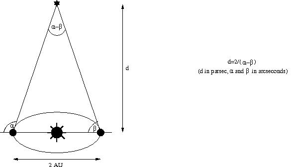

|
Andere Links:
Links außerhalb dieses Dokuments öffnen sich in
neuen Fenstern.
|
Inhaltsverzeichnis
- 0) Einleitung
- 1) Geometrie
- 2) Spektroskopische Methode
- 3) Standardkerzen und kosmologische
Entfernungen
- a) Cepheiden
- b) Supernovae
- 4) Der kosmologische Rotverschiebungseffekt
- 5) Typische Einwände von Kreationisten
- 6) Zusammenfassung
- Literaturverzeichnis
- Danksagungen
0) Einleitung
a) Zweck dieser FAQ
Ein oft verwendetes Argument dafür, dass das Universum viel älter ist als von jungen-Erde-Kreationisten (YEC) vorgeschlagen, ist die Tatsache, dass wir astronomische Objekte sehen können, die Milliarden von Lichtjahren entfernt sind (ein Lichtjahr ist die Strecke, die Licht in einem Jahr zurücklegt, ungefähr 9,5 × 1012 Kilometer). Offensichtlich (naja, vielleicht nicht so offensichtlich – siehe Abschnitt 5), benötigte das Licht von diesen Objekten Milliarden von Jahren, um uns zu erreichen, und daher muss das Universum Milliarden von Jahren alt sein.
Aber viele Menschen wissen nicht, wie die Entfernungen zu astronomischen Objekten gemessen werden, und denken, dass es mit den Methoden der Wissenschaftler etwas nicht stimmt, dass vielleicht alle Objekte, die wir am Himmel sehen, nicht weiter als einige tausend Lichtjahre entfernt sind, und daher die YECs ohnehin recht haben könnten.
Daher werde ich in diesem FAQ versuchen, die Methoden zu erklären, die in der Astronomie verwendet werden, und einige der üblichen Einwände, die von YECs (Young-Earth Creationists) erhoben werden, zu beantworten. Ich werde mich auf die bekanntesten und am häufigsten verwendeten Methoden konzentrieren; weitere Informationen finden Sie beispielsweise unter Stellar Astronomy und The ABC's of Distances.
b) Allgemeiner Überblick
Zur Messung von Entfernungen zu astronomischen Objekten verwendet man eine Art "Leiter" aus verschiedenen Methoden; jede Methode reicht nur bis zu einer begrenzten Entfernung, und jede Methode, die zu einer größeren Entfernung reicht, baut (im Allgemeinen, aber nicht immer) auf den Daten der vorherigen Methode(n) auf. Der Ausgangspunkt ist die Kenntnis der Entfernung von der Erde zur Sonne; diese Entfernung wird eine astronomische Einheit (AE) genannt und beträgt etwa 150 Millionen Kilometer. Ich denke, dass selbst YECs mit dieser Zahl einverstanden sind, daher bespreche ich hier nicht, wo man sie her hat. (Brauche ich zu erwähnen, dass man auch das heliozentrische Modell akzeptieren muss?)
Der nächste Schritt auf der Leiter besteht aus einfachen geometrischen Methoden; mit ihnen kann man bis zu einigen hundert Lichtjahren gelangen (ähnliche Methoden können jedoch auch auf größeren Skalen angewendet werden). Dies wird in Abschnitt 1 behandelt.
Mit den durch diese geometrischen Methoden gewonnenen Daten und der Hinzunahme von Photometrie und Spektroskopie gelangt man zum nächsten Schritt der Leiter. Das Hauptwerkzeug dieser spektroskopischen Methoden ist das sogenannte "Hertzsprung-Russell-Diagramm"; dies wird in Abschnitt 2 erläutert.
Für noch größere Entfernungen im Kosmos benötigt man ein zusätzliches Element: sogenannte "Standardkerzen". Was sie sind und wie sie verwendet werden, wird in Abschnitt 3 erläutert.
In Abschnitt 4 werde ich den kosmologischen Rotverschiebungseffekt und die Hubble-Beziehung erklären, die für sehr große Entfernungen (mehrere hundert Millionen oder sogar mehrere Milliarden Lichtjahre) verwendet werden.
Abschnitt 5 behandelt einige übliche Einwände des YEC; ich liefere Referenzen, die diese widerlegen.
Schließlich gebe ich in Abschnitt 6 eine kurze Zusammenfassung.
1) Geometrie
a) Einleitung
Der Abstand zu nahen Sternen kann durch ihre so genannten Parallaxen bestimmt werden.
Um zu sehen, worum es sich dabei handelt, halten Sie einen Finger nach oben vor Ihrer Nase, einige Zentimeter entfernt, und schauen Sie ihn zunächst nur mit dem geschlossenen linken Auge an, und dann mit dem geschlossenen rechten Auge. Wenn Sie seine Position mit einigen Hintergrundobjekten vergleichen, werden Sie bemerken, dass der Finger scheinbar bewegt, wenn Sie von einem Auge zum anderen wechseln! Die Erklärung ist offensichtlich: Ihre Augen befinden sich nicht an derselben Stelle, und daher haben sie eine unterschiedliche Sichtlinie auf den Finger; sie müssen einen anderen Winkel anpeilen, um den Finger zu sehen.
Die Winkel, in denen Sie mit Ihren Augen schauen müssen, hängen offensichtlich von der Entfernung des Fingers zu Ihrer Nase ab. Was wichtiger ist: die Unterschiede in den Winkeln hängen von der Entfernung ab; sie werden kleiner, wenn die Entfernung größer wird. Daher kann der Winkelunterschied verwendet werden, um die Entfernung zu messen (wenn man die Beziehung zwischen diesen beiden Dingen kennt, was einfacher Trigonometrie ist). Und genau dieser Winkelunterschied wird als Parallaxe bezeichnet. Der Abstand zwischen Ihren Augen wird als Grundlinie bezeichnet; je größer die Grundlinie ist, desto größer ist die Parallaxe für die gleiche Entfernung des beobachteten Objekts zur Grundlinie.
Die Sterne sind sehr weit von uns entfernt; ihre Parallaxe ist so klein, dass die kurze Basislinie von einem Auge zum anderen offensichtlich viel zu klein ist. Aber wir haben eine recht große Basislinie zur Verfügung, um Entfernungen zu Sternen zu messen: den Durchmesser der Erdumlaufbahn. Schauen Sie einfach, wo (unter welchem Winkel) ein Stern im Sommer am Himmel steht, und schauen Sie dann wieder, wo (unter welchem Winkel) derselbe Stern im Winter am Himmel steht, bestimmen Sie die Differenz der Winkel, und Sie haben die Parallaxe für diesen Stern – und wenn Sie dies kennen und die Länge Ihrer Basislinie (2 AE = 300 Millionen Kilometer), können Sie die Entfernung zum Stern berechnen. Das folgende Bild sollte dies veranschaulichen:

Eines der Wörter, die man in diesem Zusammenhang häufig begegnet, ist das Parsec (Abkürzung für "Parallaxe-Sekunde"); dies ist der Abstand eines Sterns, der eine Parallaxe von zwei Bogensekunden aufweisen würde, oder, äquivalent ausgedrückt, der Abstand von unserer Sonne, bei dem der Winkel zwischen Erde und Sonne (1 AE) eine Bogensekunde beträgt (eine Bogensekunde ist der 60. Teil einer Bogminute, und eine Bogminute ist der 60. Teil eines Grades). Diese Einheit ist nützlich, weil bei großen Entfernungen (kleinen Parallaxen) die Entfernung umgekehrt proportional zur Parallaxe ist; daher ist ein Stern mit einer Parallaxe von x Bogensekunden 2/x Parsec entfernt. Wie Sie selbst berechnen können, entspricht ein Parsec ungefähr 206.000 AE oder 3,09 × 1013 Kilometern, oder 3,26 Lichtjahren.
Leider gibt es noch einen weiteren möglichen Punkt der Verwirrung: In der Astronomie bedeutet „Parallaxe" üblicherweise die sogenannte jährliche Parallaxe, die sich auf die Differenz der Winkel eines Sterns aus der Sicht der Erde und der Sonne bezieht, nicht auf die Differenz der Winkel eines Sterns aus der Sicht der Erde im Sommer und im Winter. Diese jährliche Parallaxe (nennen wir sie p) ist genau die Hälfte der Parallaxe x, die oben eingeführt wurde, und daher wird der Abstand eines Sterns (in Parsec) dann einfach durch 1/p berechnet (wobei p in Bogensekunden gemessen wird).
Um ein Gefühl für diese Methode zu bekommen, können Sie sich im Parallax Lab umsehen.
b) Messungen
Alle Sterne in unserer Nachbarschaft sind weiter entfernt als ein Parsec; und daher sind ihre Parallaxen kleiner als eine Bogensekunde. Um solche kleinen Winkel zu messen, sind Instrumente mit großer Präzision erforderlich.
Der erste, der in der Lage war, die Parallaxe eines Sterns (61 Cygni) zu messen, war der Astronom und Mathematiker
Wilhelm Bessel im Jahr 1838 am Observatorium in Königsberg. Er ermittelte den Wert von 0,314 Bogensekunden (der moderne Wert beträgt 0,292 Bogensekunden, und beide sind jährliche Parallaxen), was einer Entfernung von etwas mehr als 10 Lichtjahren entspricht.
Es sei hier angemerkt, dass bereits mit der damals verfügbaren Präzision, die es nur erlaubte, Entfernungen bis zu etwa 10 Lichtjahren zu messen, gezeigt werden konnte, dass die meisten Sterne viel weiter entfernt sein müssen: Durch die Messung der Entfernungen so vieler naher Sterne wie möglich kann man einen Wert für die mittlere Dichte der Sterne (die durchschnittliche Anzahl von Sternen pro Kubiklichtjahr) ermitteln, und dann ergibt das einfache Zählen der sichtbaren Sterne und das Teilen dieses Wertes durch die mittlere Dichte eine (untere) Schranke für die Größe des Universums! Offensichtlich geht dies davon aus, dass die Dichte der Sterne in allen Regionen, in denen wir Sterne sehen können, mehr oder weniger gleich ist, aber schon der Vergleich der Winkelabstände der Sterne am Himmel zeigt, dass diese Annahme gerechtfertigt erscheint. Aber selbst wenn man eine viel höhere Sternendichte verwenden würde, würde dies immer noch auf ein sehr großes Universum hindeuten, wegen der sehr großen Anzahl von Sternen, die mit Teleskopen sichtbar sind.
In den Jahrzehnten seit Bessels Messungen hat sich die Präzision der Messungen stark verbessert, doch bestand stets das Problem der Erdatmosphäre, die zu Fehlern bei der Positionsbestimmung führt (beispielsweise aufgrund von Dichteschwankungen, die die Bilder verschwimmen lassen). Aus diesem Grund wurde 1989 der Satellit HIPPARCOS gestartet. Er maß die Positionen, Parallaxen und andere Parameter von fast 120.000 nahen Sternen. Die erreichte mittlere Präzision bei der Messung der Parallaxen betrug 0,97 Millibogensekunden (eine Millibogensekunde ist ein Tausendstel einer Bogensekunde). Im HIPPARCOS-Katalog, der aus den gemessenen Daten zusammengestellt wurde, finden Sie Tausende von Sternen mit Parallaxen von weniger als 2 Millibogensekunden – was bedeutet, dass sie mehr als 500 Parsec (1.630 Lichtjahre) entfernt sind.
Ein weiterer Satellit, namens GAIA, wird 2010 gestartet. Er wird in der Lage sein, sogar noch weiter entfernte Sterne zu vermessen, bis zu 10 Kiloparsec (10.000 Parsec oder 32.600 Lichtjahre).
Wenn man Radiowellen statt sichtbarem Licht verwendet, kann man noch kleinere Parallaxen messen, sogar von der Erde aus, ohne Satelliten. Die dort verwendete Methode heißt Very Long Baseline Interferometry: zwei Radioteleskope mit großem Abstand zueinander (meist auf verschiedenen Seiten der Erde) werden so gekoppelt, dass die Winkelbestimmung erheblich verbessert wird; die Präzision liegt in der Größenordnung von 100 Mikrobogensekunden (eine Mikrobogensekunde ist ein Millionstel einer Bogensekunde). Mit dieser Methode wurden Entfernungen zu Pulsaren (Sterne, die hauptsächlich aus Neutronen bestehen und regelmäßig Radiopulse aussenden) gemessen (Brisken et al. 2002); die größte dort gefundene Entfernung betrug etwa 2.300 Parsec (8.000 Lichtjahre). Allein dies zeigt bereits, dass das Universum älter als 6.000 Jahre ist.
c) Andere geometrische Methoden
Ähnliche geometrische Methoden können auch für Objekte verwendet werden, die sogar Milliarden Lichtjahre entfernt sind (zum Beispiel Galaxien und Quasare). In diesen Fällen muss man die Größe eines Objekts kennen, misst dann die Winkel, unter denen man die beiden Seiten des Objekts sieht, und erhält aus der Differenz der Winkel die Entfernung. Das „nur" verbleibende Problem ist es, die Größe des Objekts zu kennen.
Eine Methode, um die Größe zu bestimmen, besteht darin, den Typ des Objekts zu identifizieren (Stern, Galaxie, Staubdiskus oder Wolke usw.), so viele seiner Parameter wie möglich zu messen (Leuchtkraft, Masse, Winkelabstand zu anderen Objekten usw.), auf Basis dieser Daten ein Modell zu erstellen und die Größe aus dem Modell zu extrahieren. Diese Methode wurde verwendet, um den Abstand zur Galaxie NGC 4258 (Herrnstein et al. 1999) zu bestimmen. Die in diesem Fall modellierten und beobachteten Objekte sind Wasserwolken, die dem Kern dieser Galaxie umkreisen und charakteristische Mikrowellenstrahlung emittieren. Beobachtungen zeigen, dass die Frequenz dieser Strahlung sich periodisch mit der Zeit ändert (wegen des Doppler-Effekts: eine Verschiebung der Wellenlängen des emittierten Lichts, die proportional zur Geschwindigkeit ist, mit der sie sich bewegen). Die dadurch beobachtete Abhängigkeit der Geschwindigkeiten von der Zeit ermöglicht es, die genauen Bahnen dann zu bestimmen, einschließlich des Abstands der Wasserwolken zum Zentrum ihrer Umlaufbahn und damit der absoluten Größe des beobachteten Objekts. Das Ergebnis war, dass NGC 4258 etwa 7,2 Millionen Parsec (etwa 23,5 Millionen Lichtjahre) von uns entfernt ist, mit einer Unsicherheit von nur etwa 5 %.
Mit etwas ähnlichen Methoden wurde der Abstand zum Zentrum unserer eigenen Galaxie bestimmt: Die Umlaufbahn eines einzelnen Sterns, der das zentrale Schwarze Loch unserer Galaxie umkreist, wurde mit mehreren hochpräzisen Messungen modelliert. Diese Berechnung ergab den Abstand zum galaktischen Zentrum – 8 Kiloparsec (ungefähr 26.000 Lichtjahre) – in hervorragender Übereinstimmung mit anderen Bestimmungen dieses Abstands (Eisenhauer 2003).
Ein weiterer Ansatz besteht darin, die Lichtgeschwindigkeit zu nutzen. Ein gutes Beispiel hierfür ist die Supernova-Explosion SN1987A, die 1987 in der Großen Magellanschen Wolke stattfand, der zweitnächsten Galaxie zu unserer eigenen Galaxie, der Milchstraße (für weitere Informationen zu Supernovae siehe Abschnitt 3b und die dortigen Links). Vor der Explosion war der Stern bereits von einem Staubring umgeben. Dieser Ring begann etwa ein Jahr nach der Supernova-Explosion zu leuchten, als das Licht der Explosion ihn erreichte. Daher wissen wir, dass der Durchmesser des Rings etwa zwei Lichtjahre beträgt, und durch Messung seines scheinbaren Durchmessers am Himmel wurde die Entfernung zur Supernova auf ungefähr 169.000 Lichtjahre bestimmt. Dies stimmt gut mit anderen Entfernungsmessungen zur Großen Magellanschen Wolke überein (Panagia et al. 1991; für eine detailliertere Erklärung siehe auch Greene's Creationism Truth Filter).
Eine weitere Methode besteht darin, die Bewegung von Teilen des Objekts zu messen (wie schnell sich die Winkel zu diesen Teilen ändern) und dies mit den Geschwindigkeiten zu vergleichen, die durch den Doppler-Effekt gemessen werden. Diese Methode wurde verwendet, um die Entfernung zum Quasar 3C 279 (Homan 2000) zu bestimmen; es stellte sich heraus, dass er sich zwischen 1,5 und 2,3 Gigaparsec entfernt befindet. Ein Gigaparsec entspricht einer Milliarde Parsec, sodass diese Entfernung ungefähr 6 Milliarden Lichtjahren entspricht. Das Problem bei dieser Methode ist, dass man zusätzliche Parameter kennen muss, beispielsweise den Winkel der Bewegung zur Sichtlinie, um eine aussagekräftige Antwort zu erhalten.
2) Spektroskopische Methode
a) Stellarphotometrie und -spektroskopie
Für Sterne, die so weit entfernt sind, dass ihre Parallaxen noch nicht messbar sind, wird hauptsächlich die Photometrie verwendet, also Messungen ihrer Helligkeiten. Aus der Physik wissen wir, dass die Helligkeit proportional zum Quadrat der Entfernung abnimmt (verdoppelt man die Entfernung eines Objekts, so verringert sich seine Helligkeit auf ein Viertel); diese Verbindung zwischen Helligkeit und Entfernung wird als Umgekehrt-Quadrat-Gesetz bezeichnet. Es muss leicht angepasst werden, wenn man die Allgemeine Relativitätstheorie und die Expansion des Universums berücksichtigt, doch diese Änderungen sind für alle Sterne in unserer Galaxie und in anderen nahen Galaxien irrelevant.
Mit diesem Gesetz können wir, wenn wir die Helligkeit eines Sterns in einer festen Referenzentfernung kennen und diese mit der gemessenen Helligkeit vergleichen, bestimmen, wie weit der Stern entfernt ist. Die in der Astronomie verwendete Standardreferenzentfernung beträgt 10 Parsec; die Helligkeit, die ein Stern in dieser Entfernung von uns hätte, wird als absolute Helligkeit des Sterns bezeichnet. Seine tatsächliche Helligkeit, die wir von der Erde aus beobachten können, wird als scheinbare Helligkeit bezeichnet.
Daher bleibt nur noch die Frage: Wie können wir die absolute Helligkeit eines Sterns kennen, ohne dessen tatsächliche Entfernung vorher zu wissen? Die Lösung dieses Problems ergibt sich aus der Spektroskopie und einer Analyse der Spektren der nahen Sterne, deren Entfernungen wir aus ihren Parallaxen kennen.
Wenn man das Spektrum eines Sterns betrachtet (das von ihm empfangene Licht aufspaltet und jede Wellenlänge (jede Farbe) einzeln betrachtet, beispielsweise mit einem Prisma), sieht man an bestimmten Wellenlängen (bestimmten Farben) dunkle Linien – es wird bei diesen Wellenlängen deutlich weniger Licht emittiert als bei den anderen. Die Standarderklärung dafür ist, dass die Atome in der Atmosphäre des Sterns einen Teil des emittierten Lichts absorbieren und jedes Element nur einige bestimmte, charakteristische Wellenlängen des Lichts absorbiert. Wenn die Atome angeregt sind, emittieren sie diese gleichen Wellenlängen, sodass man genau bestimmen kann, zu welchem Element welche Spektrallinien gehören. Dies sind wohlbekannte Phänomene, die von Bunsen und Kirchhoff bereits im 19. Jahrhundert untersucht wurden. Einige schöne Bilder von Emissionslinien der Elemente und weitere Erklärungen finden Sie unter Spektren von Gasentladungen.
Daher können wir durch Betrachtung der dunklen Linien in den Sternenspektren bestimmen, welche Elemente in seiner Atmosphäre vorhanden sind. Der entscheidende Punkt ist nun, dass alle Sterne in Gruppen, sogenannte Spektralklassen, eingeteilt werden können, wobei jede Klasse ein charakteristisches Muster dunkler Linien im Spektrum aufweist und somit eine charakteristische Häufigkeit von Elementen in ihrer Atmosphäre. Diese Spektralklassen werden mit Großbuchstaben bezeichnet: O, B, A, F, G, K, M (und andere; ein guter Weg, sich diese zu merken, ist der Satz „Oh, be a fine girl/guy, kiss me"). Auf Spectral Sequence of Stars finden sich Beispiele für Sternenspektren jeder Klasse.
Wenn man die Sterne in den Klassen genauer betrachtet, stellt man fest, dass jede Spektralklasse mit einer bestimmten Sternfarbe verbunden ist. Aus der Strahlungstheorie wissen wir, dass die Farbe von der Oberflächentemperatur des Sterns abhängt (dies gilt nicht nur für Sterne, sondern auch im täglichen Leben: erhitzt man beispielsweise Eisen, leuchtet es zunächst rot, dann gelb, und erhitzt man es noch weiter, leuchtet es weiß). Die Temperatur ist bei Sternen der Spektralklasse O am höchsten und nimmt bis zur Klasse M ab; unsere Sonne, die zur Klasse G gehört, hat eine Oberflächentemperatur von 5.780 Kelvin (dies entspricht etwa 5.510 Grad Celsius oder 9.950 Grad Fahrenheit). Die Farbe ist in der Klasse O weiß und geht über Blau und Grün ins Gelbe (Klasse G, unsere Sonne) und dann weiter ins Orange und schließlich ins Rote (Klasse M).
b) Das Hertzsprung-Russell-Diagramm
Nach all diesen einleitenden Worten kommt nun der interessante Teil: Wenn man die Sterne, für die wir den Abstand aus ihren Parallaxen kennen, und somit auch für die wir die absolute Helligkeit kennen, in einem Diagramm aufträgt, wobei eine Achse die Spektralklasse/Farbe/Temperatur und die andere die absolute Helligkeit darstellt, erhält man (hauptsächlich) eine ziemlich schmale Linie! Daher sind Spektralklasse/Farbe/Temperatur und absolute Helligkeit stark miteinander verknüpft, und wenn man die Spektralklasse/Farbe/Temperatur kennt, kann man die absolute Helligkeit leicht bestimmen.
Ein solches Diagramm wird Hertzsprung-Russell-Diagramm genannt, nach den beiden Astronomen, die es erfanden (unabhängig voneinander, der erste 1911, der zweite 1913). Die Linie, auf der sich die meisten Sterne befinden, wird Hauptreihe genannt. Ein Beispiel für ein solches Diagramm, das mit Daten vom oben genannten HIPPARCOS-Satelliten erstellt wurde, findet sich auf dieser Seite über Das Hertzsprung-Russell-Diagramm; viele weitere Diagramme sind in der folgenden Postscript-Datei verfügbar: Statistische Eigenschaften: Astrophysikalische Beziehungen. Genauer gesagt, was Sie dort finden, sind sogenannte Zwei-Farben-Diagramme: die Helligkeit eines Sterns wird an zwei verschiedenen Wellenlängen gemessen, und aufgetragen wird die Differenz dieser beiden Helligkeiten auf der X-Achse und eine der beiden Helligkeiten auf der Y-Achse. Aber die Strahlungstheorie sagt uns, dass die Differenz der beiden Helligkeiten eng mit der Oberflächentemperatur eines Sterns zusammenhängt, und daher sind diese Diagramm im Wesentlichen identisch mit Hertzsprung-Russell-Diagrammen.
Die Theorie der Sternentwicklung prophezeit sogar, dass man, wenn man die Oberflächentemperatur gegen die absolute Helligkeit aufträgt, eine Linie (und keine zufällige Verteilung der Sterne) erhalten sollte; die Gesetze der Physik garantieren eine enge Korrelation zwischen Oberflächentemperatur und absoluter Helligkeit: die absolute Helligkeit hängt davon ab, wie viel Energie im Stern erzeugt wird, dies hängt von der Masse des Sterns ab (und welche Kernreaktionen in ihm ablaufen), die Masse bestimmt sein Volumen, das Volumen bestimmt seine Oberfläche, und die Oberfläche, kombiniert mit der absoluten Helligkeit, bestimmt die Temperatur. Daher bestimmt für Sterne, die im Kern dieselben Kernreaktionen ablaufen, die absolute Helligkeit die Oberflächentemperatur eindeutig, und umgekehrt.
Aber es gibt auch viele Sterne, die nicht auf dem Hauptreihen liegen; liegen sie oberhalb des Hauptreihen, werden sie Riesen genannt, liegen sie unterhalb, werden sie Zwerge genannt. Dies liegt daran, dass die Strahlungstheorie uns sagt, dass wenn zwei Sterne die gleiche Temperatur haben, aber einer heller ist als der andere, der hellere eine größere Oberfläche haben muss – er ist größer. Gemäß dem oben Gesagten muss dies bedeuten, dass unterschiedliche Kernreaktionen in ihm ablaufen, und tatsächlich sagt die Theorie der Sternentwicklung (oder Stern-Evolution, wie sie oft genannt wird – was bei Kreationisten Verwirrung stiftet...) voraus, dass Sterne mit unterschiedlichen Kernreaktionen in ihren Kernen existieren sollten.
Um die Hauptreihe, die Riesen und die Zwerge zu erklären, müsste man die gesamte Theorie der Sternentwicklung erläutern; dies ist zu viel, um sie hier aufzunehmen. Das Wesentliche ist, dass die Sterne während der meisten ihrer Lebenszeit auf der Hauptreihe liegen und Wasserstoff „verbrennen" („verbrennen" ist ein oft verwendetes Wort hier; in Wirklichkeit handelt es sich nicht um eine chemische Reaktion, sondern um eine Kernreaktion: Wasserstoffkerne werden zu Heliumkernen verschmolzen). Dann werden sie zu Riesen, „verbrennen" Helium und andere Elemente, und am Ende schrumpfen sie zu Zwergen, „verbrennen" überhaupt nichts, sondern kühlen einfach ab (oder, wenn sie größer sind, explodieren sie am Ende ihrer Lebenszeit in gewaltigen Explosionen – dies sind die Supernovae). Weitere Informationen finden Sie beispielsweise im Artikel Sternentwicklung & Tod.
Die Theorie der Sternentwicklung sagt auch voraus, dass heißere Sterne (die sich im oberen linken Bereich der Hauptreihe befinden) viel kürzer leben sollten als kühlere Sterne (die sich im unteren rechten Bereich befinden). Daher kann man durch Betrachtung des H-R-Diagramms eines Sternhaufens (eine Gruppe von Sternen, die nah beieinander liegen, zur gleichen Zeit entstanden sind und daher alle das gleiche Alter haben) und Bestimmung, welche Sterne noch auf der Hauptreihe liegen und welche bereits abgewandert sind und zu Riesen geworden sind, das Alter des Haufens ermitteln. An einer Stelle im oberen linken Bereich existiert die Hauptreihe nicht mehr, sondern die Sterne liegen auf einer anderen Linie, die von dort zum oberen rechten Bereich führt. Diese Knickstelle im Diagramm wird oft als „Knie" bezeichnet, und die Position dieses Knies verrät uns, wie alt der Haufen ist. Die Theorie der Sternentwicklung sagt uns, dass solch ein Knick auftreten sollte und welches Alter dies für die Haufen impliziert. Die auf diese Weise abgeleiteten Altersangaben bieten den Kreationisten keine Beruhigung: Sternhaufen sind in der Regel Milliarden von Jahren alt (nähere Details dazu finden sich z. B. auf der Seite Hertzsprung-Russell-Diagramm und Sternentwicklung).
c) Bestimmung von Entfernungen mithilfe des H-R-Diagramms
Was hat all dies mit der Bestimmung von Entfernungen zu tun? Einfach: Beobachten Sie die Sterne in einem Sternhaufen (die Sterne in solchen Haufen befinden sich alle ungefähr in derselben Entfernung von uns), messen Sie ihre Oberflächentemperaturen und Helligkeiten und zeichnen Sie ein Hertzsprung-Russell-Diagramm mit diesen Messungen. Sie erhalten wieder eine Hauptreihe, einige Riesen und einige Zwergsterne - aber dieses Mal haben Sie nicht ihre absolute Helligkeit, sondern ihre scheinbare Helligkeit eingetragen. Durch den Vergleich dieses neuen Diagramms mit dem Hertzsprung-Russell-Diagramm für nahe Sterne werden Sie sehen, dass das Verhältnis der beobachteten scheinbaren Helligkeit zur absoluten Helligkeit für jede Art von Stern gleich ist - und dieses Verhältnis gibt Ihnen dann die Entfernung zum Haufen.
Im Wesentlichen liefert uns das Hertzsprung-Russell-Diagramm die Informationen, die uns fehlten: die absolute Helligkeit der Sterne, für die wir nur ihre scheinbare Helligkeit beobachten können. Es gibt einige Annahmen, die wir treffen müssen – zum Beispiel, dass die Elemente „draußen" dieselben Spektrallinien aufweisen, dass die Sternentwicklung so abläuft, wie es unsere Theorien vorhersagen, und so weiter –, aber am Ende handelt es sich einfach um dieselbe Annahme, die überall in der Wissenschaft verwendet wird: dass die Naturgesetze überall im Universum auf dieselbe Weise funktionieren. Und die Tatsache, dass jede bisher beobachtete Sternhaufen genau eine Hauptreihe, einige Riesen und einige Zwergsterne in den exakt von der Theorie der Sternentwicklung vorhergesagten Proportionen aufweist, gibt starke Unterstützung dafür, dass diese Annahme gültig ist.
3) Standardkerzen und kosmologische Entfernungen
Wenn man den Abstand eines Objekts wie eines Sternhaufens oder einer Galaxie mit dem H-R-Diagramm bestimmt, muss man die Helligkeiten vieler Sterne, einschließlich schwacher Sterne, messen, um ein zuverlässiges Diagramm zu erhalten. Leider können schwache Sterne nicht gesehen werden, wenn das beobachtete Objekt zu weit entfernt ist (wegen des inversen Quadratgesetzes), daher muss man auf andere Methoden zurückgreifen: Man verwendet helle Objekte, deren absolute Helligkeit bekannt ist. Durch Messung der scheinbaren Helligkeit und Vergleich mit der absoluten Helligkeit erhält man erneut den Abstand.
Das einzige verbleibende Problem besteht darin, dass man die absolute Helligkeit des beobachteten Objekts kennen muss. Zum Glück gibt es jedoch mehrere Objekttypen, bei denen man deren absolute Helligkeiten bestimmen kann, ohne ihre Entfernungen zu kennen. Solche Objekte werden als Standardkerzen bezeichnet; ich werde die beiden häufigsten in den nächsten beiden Unterabschnitten besprechen.
a) Cepheiden
Cepheiden sind veränderliche Sterne: sie ändern periodisch ihre Größe und Temperatur – und damit auch ihre Helligkeit. Wie dies im Detail funktioniert, kann durch die Theorie der Sternstruktur und -entwicklung erklärt werden. Sie wurden nach dem ersten bekannten Mitglied dieser Sternklasse, Delta Cephei, benannt.
Zusätzlich wurde beobachtet (wiederum in Übereinstimmung mit theoretischen Modellen), dass zwischen der (durchschnittlichen) Helligkeit dieser pulsierenden Sterne und der Periode ihrer Oszillationen ein Zusammenhang besteht. Ein Diagramm, das diesen Zusammenhang veranschaulicht, findet man beispielsweise auf dieser Seite zu den Cepheiden und Der Entdeckung der Cepheiden-Variablen und der Perioden-Leuchtkraft-Beziehung. Dieser Zusammenhang wurde erstmals von Henrietta Leavitt für Cepheiden in der kleinen Magellanschen Wolke festgestellt, einer Galaxie in der Nähe unserer eigenen (ungefähr 200.000 Lichtjahre entfernt).
Da alle Sterne in der Kleinen Magellanschen Wolke ungefähr denselben Abstand zu uns haben, impliziert die beobachtete Beziehung zwischen scheinbarer Helligkeit und Periode, dass es eine äquivalente Beziehung zwischen absoluter Helligkeit und Oszillationsperiode gibt. Und tatsächlich stellte sich nach der Bestimmung der absoluten Helligkeiten vieler Cepheiden (in der Kleinen Magellanschen Wolke und anderswo) heraus, dass es eine solche universelle Beziehung gibt (auch die unterschiedliche chemische Zusammensetzung hat einen gewissen Einfluss darauf, dies kann jedoch in der Regel leicht berücksichtigt werden).
Daher muss man, wenn man den Abstand eines Sternhaufens oder eines Galaxienhaufens messen will, lediglich einige Cepheiden darin finden (sie sind recht helle Sterne, also ist das nicht allzu schwierig, sofern die Galaxie für dies nicht zu weit entfernt ist), ihre Oszillationsperioden messen und diese Beziehung nutzen, um ihre absolute Helligkeit zu bestimmen. Durch Vergleich mit der scheinbaren Helligkeit erhält man, wie üblich, ihre Entfernungen. Wenn all diese Entfernungen übereinstimmen (was sie in der Regel tun), ist das Ergebnis offensichtlich der Abstand zum Sternhaufen oder Galaxienhaufen, in dem sie sich befinden!
Dies funktioniert für Galaxien, die bis zu einigen zehn Millionen Lichtjahre entfernt sind. Zum Beispiel wurde der Abstand zur Galaxie M100 auf etwa 56 Millionen Lichtjahre bestimmt.
Offensichtlich ist der entscheidende Punkt bei dieser Methode, dass man den Zusammenhang zwischen der Schwingungsperiode und der absoluten Helligkeit mit guter Präzision kennen muss. Um diesen Zusammenhang zu bestimmen, muss man die Entfernungen einiger naher Cepheiden mit guter Präzision ermitteln. In früheren Zeiten wurde dies mit dem H-R-Diagramm und ähnlichen Techniken durchgeführt, doch heutzutage stehen uns sogar Messungen von Cepheiden-Parallaxen aus der HIPPARCOS-Mission zur Verfügung. Die Auswertung dieser Messungen ist immer noch schwierig, aber im Allgemeinen neigen die neuen Daten dazu, mit den etablierten früheren Ergebnissen übereinzustimmen. Für weitere Informationen dazu siehe z. B. Wie wird das Cepheiden-Maßstab validiert?, Die Cepheiden-Entfernungsskala: Eine Geschichte und den Abschnitt „Das Universum messen" auf der Seite Hipparcos ortet die Sterne.
b) Supernovae
Ein weiterer Typ von Standardkerze, der sehr hell ist und daher verwendet werden kann, um Entfernungen zu Galaxien auch in mehreren hundert Millionen Lichtjahren zu bestimmen, sind die gewaltigen Explosionen, die einige Sterne nahe dem Ende ihrer Lebensdauer erleben, die sogenannten Supernovae. Sie können mehr darüber erfahren (und über deren Missbrauch durch Kreationisten) auf dieser Seite im talk.origins-Archiv: Supernovae, Supernova Remnants and Young Earth Creationism FAQ. Zusätzlich gibt es mehrere Seiten zu Supernovae bei Ask the Astronomer, beispielsweise Was passiert genau mit einem Stern, der kurz vor einer Supernova steht? und Durch welchen Prozess werden Supernovae vom Typ I oder Typ II?.
Je nach ihrer Masse haben Sterne unterschiedliche Schicksale (achten Sie bitte darauf, dass das Folgende eine sehr kurze und vereinfachte Zusammenfassung ist!): Kleine Sterne, wie unser eigener Sonne, wachsen zunächst größer (wenn der gesamte Wasserstoff in ihren Kernen „verbrannt" ist und das „Verbrennen" von Helium beginnt) und werden kühler, wodurch sie zu einem Roten Riesen werden. Nachdem auch das gesamte Helium verbrannt ist, haben sie keine Energiequelle mehr und beginnen sich zusammenzuziehen und abzukühlen (oft stoßen sie vorher viele ihrer äußeren Hüllen ab). Die Endresultate sind die sogenannten Weißer Zwerg.
Schwerere Sterne hören nach der Roten-Riesen-Phase und der Heliumverbrennung nicht auf: immer mehr Elemente werden in ihren Kernen verschmolzen (dies ist möglich, weil sie im Kern einen höheren Druck und eine höhere Temperatur haben als leichte Sterne), bis Eisen entsteht. Eisen ist das stabilste Element; sein Verschmelzen kostet Energie statt Energie zu liefern. Daher haben die Sterne nach den Fusionsreaktionen, die zu Eisen führten, keine Energiequelle mehr und müssen kollabieren. Dieser Kollaps führt dazu, dass der Kern des Sterns zu einem Neutronenstern (oder sogar zu einem Schwarzen Loch) wird, und das Material von den äußeren Schalen, das auf diesen Neutronenstern fällt, prallt zurück, unterstützt durch die enorme Menge an Energie, die durch den Kollaps des Kerns freigesetzt wird. Das Ergebnis ist eine gewaltige Explosion, bei der das gesamte Material von den äußeren Schalen des Sterns ausgestoßen wird. Wir beobachten einen plötzlichen Helligkeitsblitz und später viel ausströmendes Trümmermaterial (und im Fall von SN1987A sogar einige Neutrinos). In einigen Fällen kann der verbleibende Neutronenstern sogar identifiziert werden. Diese Explosionen werden Supernova Typ II genannt. Weitere Informationen dazu finden Sie z. B. auf der HEASARC-Seite zu Supernovae.
Leider gibt es keine universelle Beziehung zwischen der Helligkeit von Supernova-II-Explosionen und anderen leicht beobachtbaren Parametern, sodass diese Supernovae für kosmische Entfernungsbestimmungen nicht sehr nützlich sind. Es gibt jedoch eine andere Art von Supernova-Explosionen, die sogenannten Supernovae Typ I. Diese können nur in Binärsystemen auftreten: zwei Sterne, die sich gegenseitig umkreisen. Wenn sie sich eng umkreisen, kann einer der Sterne Gase vom anderen (ein Prozess, der Akkretion genannt wird) an seine Oberfläche ziehen. Ein besonderer Fall tritt ein, wenn der Stern, der Material vom anderen Stern aufnimmt, ein Weißer Zwerg ist: Wenn seine Gesamtmasse eine bestimmte Grenze überschreitet (die Chandrasekhar-Grenze), beginnt er zu kollabieren. Die daraus resultierende Kompression führt zu explosiver Kohlenstofffusion, und die dabei freigesetzte enorme Energiemenge zerstört den gesamten Weißen Zwerg. Was wir hier beobachten, ist ein plötzlicher Helligkeitsanstieg, gefolgt von einem relativ langsamen (exponentiellen) Abfall. Dies geschieht, weil die Helligkeit hauptsächlich vom radioaktiven Zerfall von Nickel und Kobalt stammt, die bei der Explosion entstehen (ihre Spektrallinien können beobachtet werden), und der radioaktive Zerfall nimmt exponentiell mit der Zeit ab.
Wichtig ist nun, dass es eine universelle Beziehung zwischen der Zerfallsgeschwindigkeit des beobachteten Lichts und der Gesamthelligkeit der Explosion gibt. Durch genaues Beobachten des empfangenen Lichts einer solchen Explosion und Bestimmung der Geschwindigkeit, mit der dieses Licht an Helligkeit verliert, erhält man direkt die absolute Helligkeit der Supernova. Durch Vergleich mit der scheinbaren Helligkeit erhält man wie üblich den Abstand der Supernova – und damit den der Galaxie, in der sie sich befand.
Neueste Messungen sehr entfernter Supernovae (Riess 1998) hatten starke kosmologische Implikationen: Sie zeigten, dass die Expansion des Universums (siehe nächster Abschnitt) beschleunigt statt verlangsamt wird, im Gegensatz zu früheren Erwartungen.
4) Die kosmologische Rotverschiebung
Wenn man das Spektrum entfernter Galaxien (mindestens mehrere Millionen Lichtjahre entfernt) genau untersucht, stellt man fest, dass die wohlbekannten Spektrallinien der Elemente nicht an den üblichen Stellen erscheinen, sondern verschoben sind: sie erscheinen alle bei (leicht) größeren Wellenlängen als üblich. Da "größere Wellenlänge" "rötlicher" entspricht (rotes Licht hat die längste Wellenlänge aller sichtbaren Lichts), wird diese Verschiebung als Rotverschiebung bezeichnet. Darüber hinaus ist die relative Verschiebung für alle Spektrallinien gleich. Diese Rotverschiebung wurde erstmals 1926 von Hubble entdeckt, der auch der erste war, der einzelne Sterne in anderen Galaxien identifizierte (die zuvor als Nebel innerhalb unserer eigenen Galaxie galten). (Hubble 1926)
Derartige Verschiebungen sind wohlbekannte Phänomene für Schall sowie Licht: sie treten auf, wenn sich das Objekt, das die Wellen aussendet, sich relativ zum Beobachter bewegt. Dies wird als Doppler-Effekt bezeichnet (er wurde bereits in Abschnitt 1c erwähnt). Eine natürliche Interpretation ist daher, dass sich die Galaxien relativ zu uns bewegen; eine Rotverschiebung impliziert, dass sie sich von uns entfernen (eine Blauverschiebung würde anzeigen, dass sie sich auf uns zu bewegen; dies kann z. B. in den Spektren der Andromeda-Galaxie beobachtet werden, die sich aufgrund der Gravitationsanziehung zwischen den beiden Galaxien unserer eigenen Galaxie nähert). Bitte beachten Sie, dass die Doppler-Verschiebungs-Erklärung nicht diejenige ist, die in der modernen Kosmologie für die Rotverschiebung verwendet wird – sie liefert lediglich ein schönes, intuitives Bild dessen, was vor sich geht! Mehr dazu weiter unten.
Eine wichtige Beobachtung wurde von Hubble im Jahr 1929 (Hubble 1929) nach der Beobachtung der Rotverschiebungen mehrerer Galaxien gemacht: die Rotverschiebung (und damit die Geschwindigkeit, mit der sie sich von uns entfernen, in der Doppler-Interpretation) ist direkt proportional zu den Entfernungen der Galaxien zu uns! Dies bedeutet, dass man die einfache Gleichung schreiben kann
v = H × d,
wo v die Geschwindigkeit ist, mit der sich eine Galaxie von uns entfernt, d ihre Entfernung und H eine Konstante (die für alle Galaxien gleich ist), die Hubble-Konstante oder, korrekter ausgedrückt, der Hubble-Parameter genannt wird (weil es eigentlich keine Konstante ist; dazu mehr weiter unten). Damals waren nur sehr ungenaue Entfernungsbestimmungen verfügbar (Hubble verwendete beispielsweise Cepheiden, aber die Beziehung zwischen Helligkeit und Periode war damals noch nicht sehr präzise bekannt); mit diesen ermittelte Hubble
H = 500 Kilometer/Sekunde/Million Parsec.
Moderne Messungen haben gezeigt, dass dies zu groß ist; der derzeitige Konsenswert liegt bei ungefähr
H = 70 Kilometer/Sekunde/Million Parsec,
mit einer Messunsicherheit von weniger als 10 %. Dieser moderne Wert wurde hauptsächlich aus Beobachtungen von Cepheiden und Supernovae vom Typ I (Mould et al. 2000) abgeleitet.
Daraus sehen wir, dass je weiter sich eine Galaxie entfernt, desto schneller entfernt sie sich von uns! Heute wird dies mit der Urknalltheorie erklärt, die besagt, dass das gesamte Universum expandiert. Versuchen Sie, sich das Universum als die Oberfläche eines Ballons vorzustellen, an der die Galaxien fest angebracht sind. Wenn nun der Ballon aufgeblasen wird, entfernen sich die Galaxien offensichtlich voneinander, und die relative Geschwindigkeit zweier Galaxien ist größer, wenn ihr relativer Abstand größer ist. Daher besagt die Urknalltheorie nicht, dass sich die Galaxien voneinander entfernen – sie besagt, dass der Raum zwischen ihnen zunimmt, dass der Raum selbst expandiert! In der Urknalltheorie ist die Rotverschiebung nicht auf den Dopplereffekt zurückzuführen – sie tritt auf, weil während dieser kosmischen Expansion die Wellenlängen des Lichts, das eine Galaxie emittiert, gedehnt werden (aufgrund der Expansion des Raumes selbst). Für mehr zu diesen eher seltsamen Konzepten versuchen Sie, z. B. den Kosmologie-Tutorial von Ned Wright zu lesen.
Wie die Analogie mit dem aufblasbaren Ballon bereits andeutet, führt die Interpretation der Rotverschiebung als Folge der Ausdehnung des Raumes selbst zu mehreren Abweichungen vom einfachen linearen Hubble-Gesetz oben: Erstens, da der Raum „gekrümmt" ist, kann die Rotverschiebung bei großen Entfernungen nicht mehr direkt proportional zur Entfernung sein, und zweitens, da die „Inflationsrate" des Ballons nicht konstant ist, kann H keine echte Konstante sein – sie muss sich mit der Zeit ändern. Beide dieser Effekte werden von der Urknalltheorie berücksichtigt, die aus der Allgemeinen Relativitätstheorie unter Verwendung einiger Annahmen über die Natur des Universums abgeleitet wird, wie dem Kosmologischen Prinzip (das Universum sieht im Wesentlichen überall und in jede Richtung gleich aus; dies ist tatsächlich der Fall, wenn man wirklich große Skalen betrachtet, etwa 100 Millionen Lichtjahre) und den Arten von Materie und Energie darin.
Kürzlich stellte sich heraus, dass die Expansion des Universums beschleunigt verläuft (eine Verlangsamung wäre aufgrund der Gravitationsanziehung zwischen allen Galaxien zu erwarten). Dies wird als Beleg für die sogenannte dunkle Energie interpretiert, die die seltsame Eigenschaft hat, gegen die Gravitation zu wirken und somit die Galaxien voneinander wegzudrücken (Riess 1998). Eine Art dunkle Energie (ein sogenannter Kosmologischer Konstante) wurde bereits von Einstein in seiner Allgemeinen Relativitätstheorie in den 1920er Jahren vorgeschlagen, doch er gab diese Idee später auf, weil die damals verfügbaren Beweise sie zu widerlegen schienen. Heute wissen wir besser; beispielsweise stützen die Ergebnisse von WMAP (die Methoden völlig unterschiedlich von den Supernova-Messungen verwendeten) stark die Existenz dieser mysteriösen dunklen Energie (und den Wert für den Hubble-Parameter, der in den Supernova-Studien gefunden wurde).
Daher ist das Verfahren zur Bestimmung des Abstands von wirklich weit entfernten Objekten recht einfach: man misst die Rotverschiebung und setzt den gemessenen Wert in eine Formel ein, die von der Urknalltheorie bereitgestellt wird (ähnlich dem einfachen Hubble-Gesetz oben, aber komplizierter, da weitere Effekte berücksichtigt werden müssen) – dies ergibt den Abstand. Leider sind die kosmologischen Parameter, die in diese Formel eingehen (der Hubble-Parameter, die Menge an Materie und dunkler Energie im Universum und andere), noch nicht mit großer Präzision bekannt, und daher sind die mit diesem Verfahren berechneten Abstände nicht so zuverlässig wie die mit anderen Methoden bestimmten (die Unsicherheiten können bis zu 20% betragen). Dennoch ist das Verfahren nützlich, um eine erste Schätzung des Abstands zu erhalten, wenn man nicht will (oder nicht die Zeit oder die Ausrüstung hat), um eine ausgefeiltere Methodik zu verwenden.
Leider werden bei Berichten über Distanzmessungen mit dieser Methode in der populärwissenschaftlichen Presse meist nur die ermittelte Distanz angegeben, nicht jedoch der gemessene Rotverschiebungswert oder die verwendeten kosmologischen Parameter; dies kann dazu führen, dass für dasselbe Objekt und dieselbe Studie an verschiedenen Stellen unterschiedliche Distanzen berichtet werden. Vergleichen Sie z. B. den Artikel Das Licht einer Galaxie schiebt die dunklen Zeiten des Universums zurück mit Neuer Rekord für das entfernteste Objekt im Universum; beide behandeln dasselbe Objekt und dieselbe Studie, berichten dennoch die ersten 15,5 Milliarden Lichtjahre, während die zweiten 13,6 Milliarden Lichtjahre angeben!
Eine weitere Komplikation besteht darin, dass nicht klar ist, was hier mit „Entfernung" gemeint ist. Oft wird nicht die „echte" Entfernung berichtet, die die Galaxie heute zu uns hat, sondern die Zeit, die das Licht benötigte, um zu uns zu gelangen. Eine weitere in der Kosmologie verwendete Art der Entfernung ist die sogenannte Leuchtkraftentfernung, und es gibt noch einige weitere. Beim Lesen eines (populärwissenschaftlichen) Berichts über Entfernungen zu fernen Galaxien muss man vorsichtig sein, was dort mit „Entfernung" gemeint ist!
5) Standard Einwände von Kreationisten
Dieser Abschnitt ist hauptsächlich dazu gedacht, Kreationisten zu stoppen, die alles oben Gelesene gelesen haben und glauben, sie könnten es mit einem einzigen „witzigen" Argument widerlegen. Die meisten von Kreationisten verwendeten Argumente sind bereits gut bekannt und wurden vor langer Zeit widerlegt. Eine detaillierte Widerlegung hier würde dieses FAQ viel zu lang machen (und dies ist nicht der ursprüngliche Zweck dieses FAQs), daher erkläre ich einfach die Argumente und gebe Referenzen zu Widerlegungen.
a) Das Licht wurde auf dem Weg erschaffen
Häufig akzeptieren Kreationisten, dass die oben skizzierten Methoden tatsächlich korrekte Ergebnisse liefern – mit der Einschränkung, dass sie nur für das beobachtete Licht korrekte Ergebnisse liefern und dass dieses Licht nicht unbedingt realen Objekten im Universum entsprechen muss! Mit anderen Worten sagen sie, dass das Licht vielleicht nicht wirklich von realen astronomischen Objekten emittiert wurde, sondern einfach „im Transit“ auf dem Weg zur Erde erzeugt wurde. Dies ist ihrer Meinung nach eine schöne Erklärung für die hässliche Tatsache, dass wir das Licht von Objekten sehen können, die scheinbar Milliarden Lichtjahre entfernt sind, obwohl das Universum (in ihrer Meinung) nur 6.000 Jahre alt ist. (Eine Variante davon, die ich einmal sah, ist der staunenerregende Gedanke „Vielleicht können wir das Licht schon sehen, bevor es uns erreicht hat?"
Offensichtlich kann dieses Argument nicht durch Wissenschaft widerlegt werden – aber ich denke, das ist nicht notwendig. Im Wesentlichen handelt es sich hierbei um ein „Scheinalter"-Argument – das Universum ist sehr jung, aber Gott hat es so gestaltet, dass es sehr alt aussieht. Das ist nicht nur schlechte Wissenschaft, sondern auch schlechte Theologie – es lässt Gott wie einen Lügner erscheinen! Manche Kreationisten vermeiden dies, indem sie argumentieren, dass Adam und Eva „reif“ erschaffen wurden und daher das Universum ebenfalls „reif", d. h. alt aussehend, erschaffen werden musste, aber ich denke, diese Analogie macht überhaupt keinen Sinn: eine bessere Analogie wäre, dass Adam und Eva nicht nur reif, sondern auch mit einigen Narben von Verletzungen erschaffen wurden, die nie wirklich stattgefunden haben!
Sogar die großen kreationistischen Organisationen Answers in Genesis und Institute for Creation Research haben dieses Argument aufgegeben (siehe den Abschnitt „Erzeugtes Licht?" im Artikel Wie können wir ferne Sterne in einem jungen Universum sehen? und den Abschnitt „Fazit" in Der aktuelle Stand der kreationistischen Astronomie), wobei sie im Wesentlichen das Argument verwenden, das ich hier dargelegt habe; dennoch gibt es immer noch viele Kreationisten, die dies für ein gültiges Argument halten.
b) Veränderung der Lichtgeschwindigkeit
Ein weiterer Argument, das auch in Wie können wir ferne Sterne in einem jungen Universum sehen? erwähnt wird, ist, dass vielleicht die Lichtgeschwindigkeit sich geändert hat, dass sie in der Vergangenheit schneller war. Ein starker Befürworter dieser These ist Barry Setterfield. Offensichtlich, wenn die Lichtgeschwindigkeit in der Vergangenheit weit größer war, könnte Licht von Objekten, die Milliarden von Lichtjahren entfernt sind, die Erde in nur wenigen tausend Jahren erreicht haben! Setterfields' Argumente werden (und in Stücke zerrissen) in vielen Artikeln diskutiert, einschließlich des Artikels bei Answers in Genesis, der oben erwähnt wurde. Einige nützliche Referenzen sind:
- Ein sich änderndes Lichtgeschwindigkeitsgesetz? und darin verlinkte Seiten
- A6. Die Entfernung zur Supernova SN1987A und die Lichtgeschwindigkeit
- Der Zerfall der c-Zerfallsrate
- Wenn Setterfield recht hat, waren Adam und Eva Eiszapfen
Ein verbreiteter Ansatz besteht darin, „Uhren" mit bekannten Raten (wie Pulsare, rotierende Neutronensterne, die periodisch Radiopulse aussenden) zu verwenden, zu prüfen, was eine sich ändernde Lichtgeschwindigkeit für Beobachtungen dieser Raten vorhersagt, und diese Vorhersagen mit den tatsächlichen Daten zu vergleichen.
c) Probleme mit der Rotverschiebung
Ein weiterer Standardangriff auf Entfernungsbestimmungen ist die Behauptung, dass unsere Interpretation der Ursache der Rotverschiebung falsch ist (solche Angriffe kommen oft von Leuten, die glauben, Kosmologen würden sagen, die Rotverschiebung sei auf den Dopplereffekt zurückzuführen; ein schönes Beispiel für solchen Unsinn ist Quasars and the Big Bang). Prominente Angriffe gegen die kosmologische Rotverschiebungs-Interpretation waren die sogenannte „ermüdete Licht"-Hypothese (das Licht verliert Energie auf dem Weg zu uns) und die „Quantisierung der Rotverschiebung" (die Behauptung, dass Rotverschiebungen irgendwie periodisch sind und nur als Vielfache einer bestimmten Grundrotverschiebung auftreten; diese Aussage wurde auch von Setterfield übernommen).
Wie bereits erwähnt, gibt es im Internet viele Widerlegungen zu diesen Ideen; meiner Meinung nach sind die beiden wichtigsten:
- Fehler in der Tired-Light-Kosmologie
- Keine Periodizitäten in den Daten der 2dF-Redshift-Erhebung (dies ist ein recht technischer Artikel, aber das Fazit sollte klar sein)
Es gibt noch ein weiteres starkes Indiz dafür, dass die Rotverschiebung tatsächlich kosmologisch ist und nicht auf eine dieser anderen Erklärungen zurückzuführen ist. Zwischen fernen Quasaren und uns befinden sich in der Regel viele Gaswolken, die Licht absorbieren. Daher erhalten wir (dunkle) Absorptionslinien in den Spektren dieser Quasare. Da sich diese Gaswolken jedoch in unterschiedlichen Entfernungen von uns befinden – und die meisten in Entfernungen, in denen die Rotverschiebung nicht vernachlässigbar ist – erhalten wir nicht nur eine Absorptionslinie, sondern mehrere verschiedene (eine für jede Gaswolke bei jeder unterschiedlichen Entfernung und damit unterschiedlicher Rotverschiebung). Folglich erhält man im Spektrum in der Regel ein „Wald" aus vielen Absorptionslinien bei unterschiedlichen Wellenlängen. Da die Absorptionslinie, die man in der Regel untersucht, als Lyman-alpha-Linie bezeichnet wird, wird dieses Phänomen als Lyman-alpha-Wald bezeichnet. Wenn die Rotverschiebung nun wirklich kosmologisch ist und von der Entfernung abhängt, sollte man beobachten, dass alle diese Absorptionslinien eine geringere Rotverschiebung aufweisen als die Emissionslinie des Quasars hinter all diesen Gaswolken. Und genau das wird tatsächlich beobachtet!
Hier ist ein (ziemlich technisches) Papier, das die Beobachtungen berichtet: Beweise, die mit der kosmologischen Interpretation der Quasar-Rotverschiebungen übereinstimmen. Sie können weitere Informationen zu diesem Thema auf dem Bad Astronomy Bulletin Board finden: Rotverschiebungen sind kosmologisch: Der Lyman-Alpha-Wald und Arp.
d) Russell Humphreys' Starlight and Time
Im Jahr 2000 veröffentlichte
Dr. Russell Humphreys sein Buch
Starlight and Time. Darin schlug er eine Alternative zur Urknalltheorie vor: Er behauptete, dass man, wenn man die Allgemeine Relativitätstheorie verwendet, aber annimmt (im Gegensatz zur standardmäßigen Urknalltheorie), dass das Universum einen Mittelpunkt und eine Grenze hat, ein Modell konstruieren kann, in dem die Zeit an diesem Mittelpunkt viel langsamer vergeht als in den äußeren Regionen. Es gab viel Debatte darüber, und sogar andere Kreationisten haben darauf hingewiesen, dass es Fehler in seinem Modell gibt (siehe beispielsweise den Kommentar "Diese Kritik hat dazu geführt, dass das Redaktionspersonal des ICC zu dem Schluss kam, dass es einen Fehler im Peer-Review-Prozess von Humphreys' 1994er-Papier [29] gab, in dem er sein Modell erstmals öffentlich präsentierte."
in Der aktuelle Stand der Kreation-Astronomie). Dennoch bevorzugen die großen kreationistischen Organisationen Answers in Genesis und Institute for Creation Research weiterhin dieses Modell (siehe Wie können wir ferne Sterne in einem jungen Universum sehen? und Der aktuelle Stand der Kreation-Astronomie). Die alt-erdige Kreationisten-Organisation (OEC) Reasons to Believe veröffentlichte die folgende
Widerlegung von Humphreys' Modell, einschließlich seiner späteren Änderungen am Modell (die, so weit mir bekannt ist, nicht zur Veröffentlichung eines neuen, aktualisierten Buches geführt haben).
Eine längere, recht technische Anmerkung (ebenfalls von einem OEC) ist Sternlicht und Zeit ist der Urknall. Sie enthält viele wertvolle Argumente gegen Humphreys' Modell.
Hier ist noch eine weitere eher technische Widerlegung: Fehler in Humphreys' kosmologischem Modell, das eine Antwort von Humphreys enthält.
Mehr Kritikpunkte an Humphreys' Modell und seine Antworten darauf finden Sie unter Russell Humphreys antwortet auf verschiedene Kritiker.
Auch interessant ist Tim Thompsons Kommentar im talk.origins Feedback von April 2003.
e) Eine Diskussion zwischen Ross und Hovind
Im Oktober 2000 gab es eine Debatte zwischen Dr. Hugh Ross, einem Old Earth Creationist, und dem YEC Kent Hovind. Sie können diese Debatte auf der Homepage von The John Ankerberg show oder bei Reasons to Believe erwerben. Answers in Genesis (AiG) veröffentlichte daraufhin Hugh Ross lays down the gauntlet!, in dem sie einige (echte) Fehler darlegen, die Ross während der Debatte gemacht hat. Ross erwähnte die geometrischen Entfernungsbestimmungen zu 3C 279 und NGC 4258, wie sie in Abschnitt 1c erklärt werden, und wies korrekt darauf hin, dass diese Milliarden bzw. Millionen Lichtjahre entfernt sind, behauptete jedoch fälschlicherweise, es handele sich um Parallaxenmessungen (siehe Abschnitt 1c für eine Erklärung der tatsächlichen Messmethode). AiG korrigiert Ross (ohne, soweit ich sehen kann, weitere Fehler zu begehen), gibt jedoch dennoch zu, dass große Entfernungen im Universum wahrscheinlich real sind (ihre Einschränkung ist Humphreys Modell, siehe oben).
f) Gentry
Ein weiteres Modell für ein Universum mit einem Zentrum stammt von YEC Robert V. Gentry, der vor allem für seine Polonium-Halo-Behauptungen bekannt ist. In seinem Modell ist das Universum statisch und von einer Hülle aus Wasserstoff umgeben. Zudem verwendet er eine Art dunkle Energie, die der Schwerkraft entgegenwirkt. Es gibt zwei eher technische Papiere zu seinem Modell: Eine neue Rotverschiebungsinterpretation und Das echte kosmische Rosetta.
Ein technischer Widerlegung von Gentrys Modell ist der Artikel Remarks on the "New Redshift Interpretation". Zusätzlich gibt es die TalkOrigins FAQ Debunking Robert Gentry's "New Redshift Interpretation" Cosmology
6) Zusammenfassung
- Geometrische Parallaxen wurden bis zu Entfernungen gemessen, die bereits die weniger als 10.000 Jahre alte „Junges-Universum-Hypothese" in Frage stellen. In den nächsten Jahren wird mit dem Start von GAIA die Messung auf mehr als 30.000 Lichtjahre ausgedehnt werden.
- Geometrische Messungen zu Objekten, die Tausende, Millionen und sogar Milliarden Lichtjahre entfernt sind, sind verfügbar, indem sinnvolle physikalische Modelle für die beobachteten Objekte verwendet werden.
- Andere Methoden stützen sich auf ein gut etabliertes Modell dafür, was Sterne sind und wie sie sich während ihrer Lebensdauer verändern. Mindestens die Milliarden Sterne in unserer Galaxie, wenn sie überhaupt Sterne sind (und nicht nur mysteriöse Lichtpunkte), müssen sich viele Zehntausende Lichtjahre entfernt befinden.
- Die Methoden zur Bestimmung von Entfernungen zu sehr weit entfernten Objekten stützen sich auf gut untersuchte „Standardkerzen".
- Alle bisherigen Befunde waren mit den Vorhersagen der Theorie der Sternentwicklung und der Urknalltheorie vereinbar.
Schließlich muss man erkennen, dass die Methoden, die zur Bestimmung von Entfernungen verwendet werden, zwar scheinbar stark aufeinander angewiesen sind (wie ich in der Einleitung erwähnt habe, nutzt man eine Art „Leiter" unterschiedlicher Methoden), es existiert jedoch stattdessen ein ganzes Netz sich gegenseitig korrigierender und ineinandergreifender Methoden, die alle zu denselben Schlussfolgerungen kommen. Die Annahmen, die in die Methoden einfließen, werden dadurch gerechtfertigt, dass wir konsistente Ergebnisse erhalten, wenn wir diese Annahmen verwenden.
Referenzen
Brisken, W. F. et al., Very Long Baseline Array measurement of nine pulsar parallaxes, Astrophysical Journal 571, 906 (2002). http://adsabs.harvard.edu/cgi-bin/nph-bib_query?bibcode=2002ApJ...571..906B
Eisenhauer F. et al, Eine geometrische Bestimmung des Abstands zum galaktischen Zentrum (2003).http://xxx.lanl.gov/abs/astro-ph/0306220
Herrnstein, J. R. et al., Ein geometrischer Abstand zur Galaxie NGC4258 aus orbitalen Bewegungen in einem Kerngasdiskus, Nature 400, 539 (1999). http://www.nature.com/cgi-taf/DynaPage.taf?file=/nature/journal/v400/n6744/abs/400539a0_fs.html
Homan, D.C. und J. F. C. Wardle, Direct distance measurements to superluminal radio sources, Astrophysical Journal 535, 575 (2000). http://adsabs.harvard.edu/cgi-bin/nph-bib_query?bibcode=2000ApJ...535..575H
Hubble, E. P., Eine Spiralnebel als Sternensystem. Messier 33, Astrophysical Journal 63, 236 (1926). http://adsabs.harvard.edu/cgi-bin/nph-bib_query?bibcode=1926ApJ....63..236H
Hubble, E. P., Eine Beziehung zwischen Entfernung und radialer Geschwindigkeit unter auergalaktischen Nebeln, Proceedings of the National Academy of Sciences 15 (1929). http://antwrp.gsfc.nasa.gov/diamond_jubilee/1996/hub_1929.html
Mould, J. R. et al., The Hubble Space Telescope Key Project on the Extragalactic Distance Scale. XXVIII. Kombinierung der Einschränkungen für die Hubble-Konstante, Astrophysical Journal 529, 786 (2000). http://adsabs.harvard.edu/cgi-bin/nph-bib_query?bibcode=2000ApJ...529..786M
Panagia, N. et al., Eigenschaften des circumstellaren Rings von SN 1987A und der Abstand zur Großen Magellanschen Wolke, Astrophysical Journal 380, L23-26 (1991) http://adsabs.harvard.edu/cgi-bin/nph-bib_query?bibcode=1991ApJ...380L..23P ; Sky & Telescope, Februar 1997.
Riess, A. G. et al., Beobachtungsbelege aus Supernovae für ein beschleunigendes Universum und eine kosmologische Konstante, Astronomical Journal 116, 1009 (1998). http://adsabs.harvard.edu/cgi-bin/nph-bib_query?bibcode=1998AJ....116.1009R
Danksagung
Ich möchte mich bei Steve Carlip, Dan Day, Jon Fleming, Michael Hopkins, Tom Scharle, Phill Skelton und Arne Vogel für viele wertvolle Kommentare, Korrekturen und Ergänzungen bedanken.